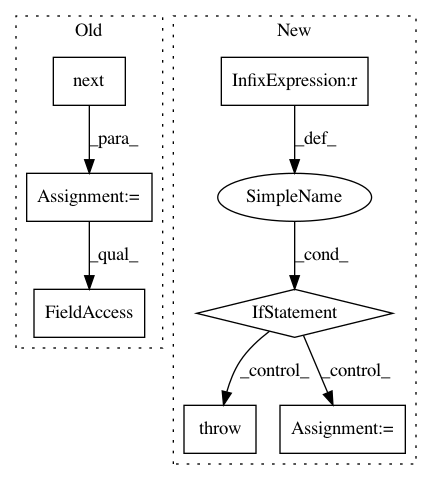

df4ac0ed8a1f42b864b49d45056ad8dc95b3510c,perfkitbenchmarker/providers/openstack/os_disk.py,OpenStackDisk,Attach,#OpenStackDisk#Any#,80
Before Change
def Attach(self, vm):
self.attached_vm_name = vm.name
self.attached_vm_id = vm.id
device_hint_name = "/dev/vd" + self.virtual_disks.next()
result = self.__nclient.volumes.create_server_volume(vm.id,
self._disk.id,
device_hint_name)
self.attach_id = result.id
self.device = "/dev/disk/by-id/virtio-" + result.id[:20]
is_unattached = True
while is_unattached:
After Change
and volume.attachments)
for attachment in volume.attachments:
if self.attach_id == attachment.get("volume_id"):
self.device = attachment.get("device")
return
raise errors.Error("Couldn"t not attach volume to %s" % vm.name)
def GetDevicePath(self):
return self.device
In pattern: SUPERPATTERN
Frequency: 3
Non-data size: 7
Instances
Project Name: GoogleCloudPlatform/PerfKitBenchmarker
Commit Name: df4ac0ed8a1f42b864b49d45056ad8dc95b3510c
Time: 2015-12-08
Author: carlos.torres@rackspace.com
File Name: perfkitbenchmarker/providers/openstack/os_disk.py
Class Name: OpenStackDisk
Method Name: Attach
Project Name: reinforceio/tensorforce
Commit Name: 980fe014b6215730ac4fdfa451b067e6fb44e622
Time: 2020-08-13
Author: alexkuhnle@t-online.de
File Name: tensorforce/agents/dpg.py
Class Name: DeterministicPolicyGradient
Method Name: __init__
Project Name: GoogleCloudPlatform/PerfKitBenchmarker
Commit Name: 874170dad8d905dcae3513b7a9cf7f95803480a2
Time: 2015-12-03
Author: carlos.torres@rackspace.com
File Name: perfkitbenchmarker/providers/openstack/os_disk.py
Class Name: OpenStackDisk
Method Name: Attach